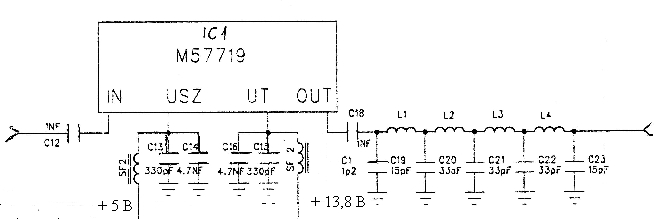

Гибридный выходной каскад радиостанции TR331-160 на модуле M57719
В середине 1990 годов в электроэнергетике использовались
радиостанции
TR331-160, производства Будапештского радиотехнического завода BRG.
Основу выходного каскада этой радиостанции составлял модуль Mitsubishi
M57719,
работающий на частоте 145-175 МГц с выходной мощностью 14 Вт
при напряжении питания 12,5 В.
Сейчас эти радиостанции списаны, а радиолюбители могут использовать выходной каскад практически без переделки.
Рис. 1 Схема выходного каскада радиостанции TR331-160 на модуле M57719
Инструкция по измерению гибридного выходного каскада на 160 Мгц
1. После осмотра устраняем случайные короткие замыкания. Отпаяем и
поднимаем вывод С18, который ближе К IC1 и соединяем выходом
вобулятора.
Вход вобулятора присодиняем к пункту J1. Затухание фильтра должно быть
лучше 0,3 дБ в диапазоне 146-175 Мгц,
а в полосе заграждения фильтра до 1 Гц мин. 60 дБ.
2. Подаем напряжение 13,8 В на положительный вывод С17
и напряжение на выходе U20UT, которое должно быть 8 В
± 0,5.
3. Проверяем напряжение на выходе U1A1, чтобы оно изменялось при
вращении потенциометра Р1.
4. Соединяем выхода ВЧ генератора пунктом J2 и насраиваем 150мВт
выходную мощность.
Измеряем выходную мощность каскада на выходе J1 и настраиваем это на
13-14 Вт потенциометром Р1.
В этом случае потребляемый ток должен быть меньше 3А.
Проверяем постоянность уровня выходной мощности в диапазоне 146-174 Мгц
при постоянном уровня входного сигнала, отклонение может быть
± 1дБ.
Главная | О своём городе | Антенны | Радиосвязь на КВ | Радиосвязь на УКВ | Гостевая
Copyright © 2014 Сайт радиолюбителей г. Климовичи | Design studio Zurbagan